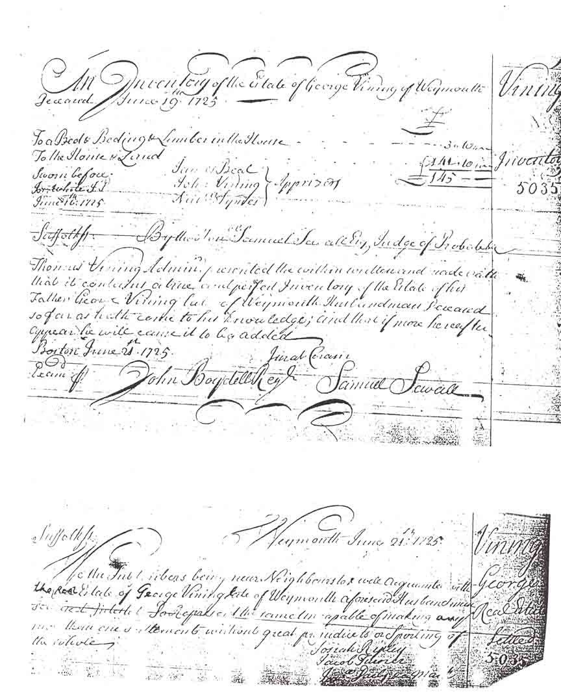
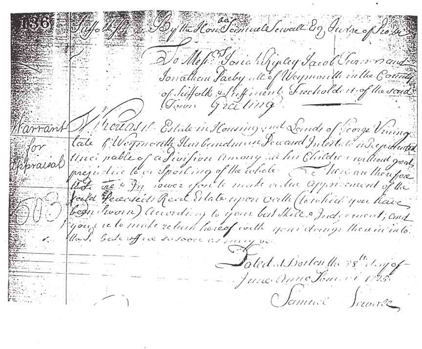
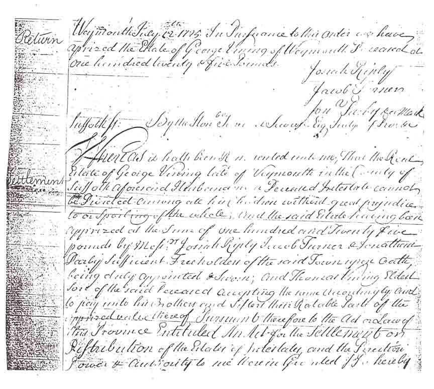
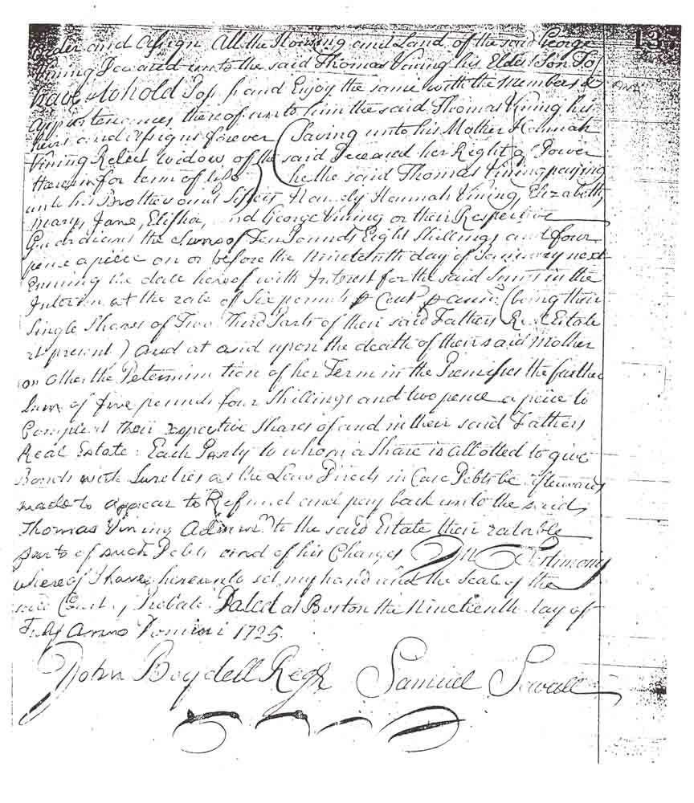

Probate Court Data
Suffolk County, Massachusetts, probabe court filings for the estate of George Vining, who died intestate. The "Settlement" (the fourth and fifth images below) gave "all the housing and land of the said George Vining deceased unto the said Thomas Vining his eldest son" and required Thomas to make a payment for this property to "his brothers and sisters namely Hannah Vining, Elizabeth, Mary, Jane, Elisha, and George Vining".


